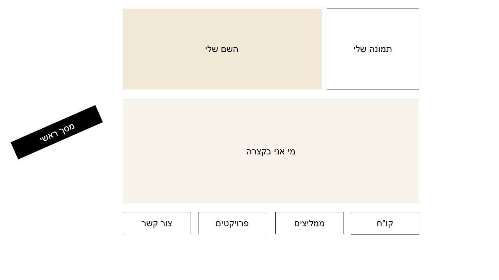
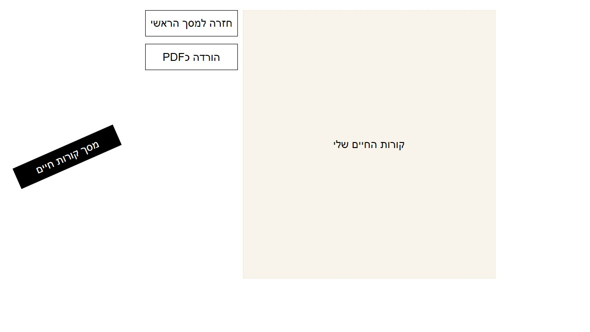
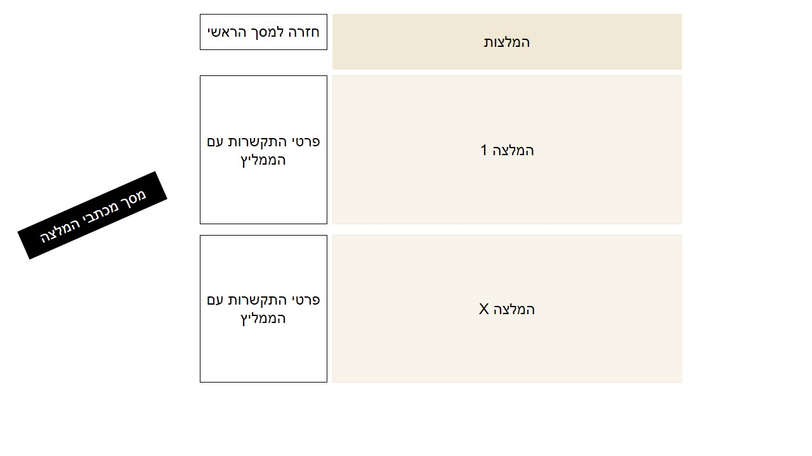
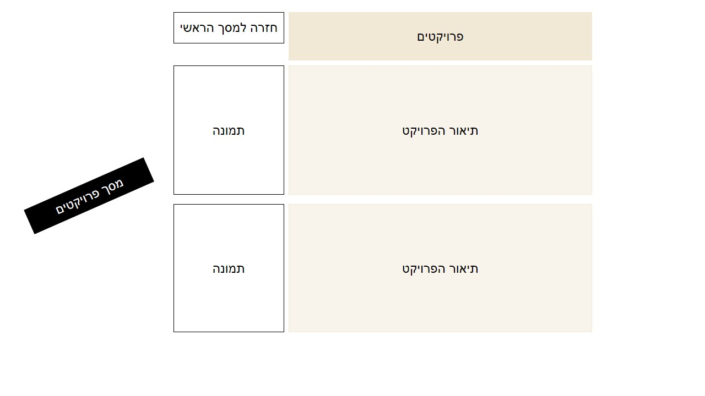
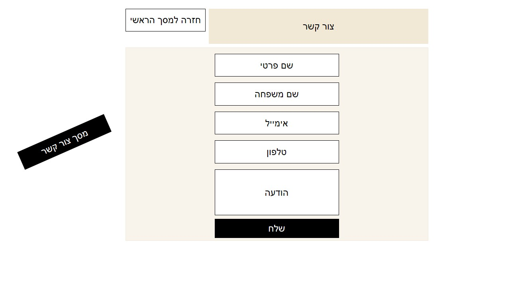

CV Plan - Meitar Goldfinger
UX Plan Answers:
- קהל היעד של האתר הם חברות בעלות משרות אשר אני מעוניינת בהן, ומעסיקים אשר רוצים להכיר אותי ואת קורות חיי
- המטרה הראשית של האתר היא להציג אותי באופן מקצועי ורציני על מנת שחברות ירצו להעסיק אותי
- המטרות המשניות הן להתנסות בכתיבת קורות חיים בצורה מקצועית ולהראות צד נוסף של יכולותיי המקצועיות
- אני רוצה שמשתמש באתר יוכל לראות את קורות החיים שלי, לעבור בלחיצת כפתור לדף הפייסבוק והלינקדין שלי, ליצור איתי קשר ע"י מתן פרטי התקשרות או השארת פרטי התקשרות, להיכנס לדף אנשי הקשר שלי ולהתרשם ממכתבי המלצות
- מדד ההצלחה הראשי הוא מספר המעסיקים שיפנו אליי או לאחד מאנשי הקשר. כמובן שהמדד הטוב ביותר הוא קבלה למשרה לאחר פניית המעסיק
- עולם התוכן אליו האתר מתייחס הוא עולם התוכן העסקי
UX Plan Answers:
- באתר יהיו 5 מסכים- מסך הבית בו אספר על עצמי בקצרה, מסך קורות החיים, מסך צור קשר, מסך מכתבי המלצה ומסך אנשי קשר להתקשרות
++:





- ארצה שהאתר שלי יהיה יפה מבחינה ויזואלית ונוח למשתמש, לכן אבחר בצבעים לבן, בז' ושמנת כרקע האתר, ואבחר בצבע שחור לטובת הכיתוב באתר
- בחרתי בגופן Roboto להלן: Roboto font
- התמונות שיוצגו באתר הן תמונה שלי ותמונות של פרויקטים שעשיתי